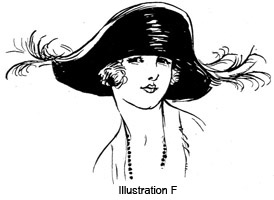
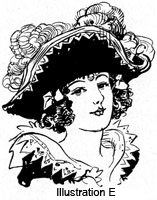

1928—The New-Way Course in Millinery and Hat Design
Lesson 14—Design
Design
To make our hats the birds of the air furnish their feathers, the beasts of the field their wool and hair, the silk worm its silk. The mines of the earth have given up their precious metals and stones, the very depths of the sea have furnished coral and pearls that milady's headdress may be not only useful, but ornamental.
But the materials are not enough. For centuries, man has sought with patient insistence to combine any or all of these materials into suitable coverings for the head. Each generation brought forth new hat ideas; each century was rich in new "style" ideas. The correct hat of today is the result of centuries of invention, improvement, talent and toil. And the inventions and improvements still go on!
Today, there are the accumulated ideas of other ages to depend upon. There are secrets of design which have been handed down from one century to another, methods of construction and finish that are as much a part of millinery as the needle and thread is a part of dressmaking. In this lesson we aim to give you in brief, concise form all the worth-while information on millinery and millinery design from the time hat-making first became a recognized art until the present day.
To give a complete, detailed lesson on all the different types of hats and all the various practices in design would be a herculean task—impossible in a course of this kind. But what we have done is to eliminate all those facts and features of millinery design which have proven impracticable and useless; and we have incorporated into this book all those features which you will find useful in your own work of creating beautiful hats.
Let us begin with a study of hats through the centuries. It is interesting—and will be helpful when you begin designing hats for yourself. The hats of other days lend inspiration to the hat-styles of every season. As you study the various types of hats you will notice their influence on present-day styles.
The Antiquity of Headgear
If we refer to historians and cyclopedists we will find that hats, as we know them, were first worn in the 15th century. F. Daniel, for instance, says that in 1449 Charles VII on making his public entry into Rouen wore a hat lined with red velvet, surmounted by a huge tuft of feathers, and from that time on the hat came into fashion.
As a matter of fact, hats were worn very much earlier than the 15th century. Hats are almost as old as civilized man. Of course it is impossible to ascertain by whom hats were first invented, and by whom first worn. But we do know that the type of hat first worn was a simple skull-cap made of dog skin. It was worn by the early Roman soldiers. The Greek "pileus" of felt followed, and it is this early Greek hat that we must consider the origin of our present-day hats. It was a simple, round skull cap, some of which were pointed. It was worn by the soldiers when they dressed for inspection and when they marched to war.
The word "hat" itself probably had its origin in the Anglo-Saxon word "haet" which means to cover. Many authors derive its meaning from the Dutch word "horden" which means to protect. But whatever its origin, we know that its meaning is a covering for the head, a protection against rain, sun, wind.
Remembering that hats are extremely old, that the first Indian probably stuck a tuft of feathers in his hair both for ornamentation and protection against the elements, let us skip to the 11th century. In the manuscripts of the 11th century preserved in the Cottonian Museum, there are represented several different kinds of hats which were being worn in England at that time. The hooded cloak appears to have been the first real "fashion" in headcoverings worn by the Anglo-Saxons. The hooded cloak was worn by both sexes alike. In time, it gave place to the detached cap or hat.
The Hat as a Mark of Rank
The hat has always been regarded with a certain reverence. It has been used by all tribes and all nations as a symbol of rank. After all, aren't the crowns of monarchs but highly ornamented hats? The coronets of nobles, the helmets of warriors, the feathered headdresses of Indian braves—all are but modifications of the hat.
In the 13th century, Pope Innocent the Fourth showed his veneration for the hat by proclaiming it the symbol of distinction and ordaining that Cardinals wear a scarlet hat. This scarlet hat was to indicate to the world their willingness to shed their blood in the cause of religion.
During the Middle Ages, a cap was given to students who had attained full liberty, to denote that they were no longer subject to the rod of superiors. Today, the square cap which is presented to graduates of our colleges and universities, is still a mark of rank— an indication of academic superiority. This square cap, honored today in all our greatest universities was originated by Patrouillet, a Frenchman.
The very lifting of the hat as a mark of politeness is a relic of other days. The hat was removed in the presence of people of rank. Today the hat is removed when the American Flag passes in parade, when a noted celebrity is being addressed, when a woman is greeted in passing. It is still, you see, a mark of rank.
Through the Centuries
Inasmuch as most authorities claim that hats, as we know them, were really a noteworthy part of clothing only in the 15th century, let us start with that century in discussing the various styles and fashions. We will consider not only the hat, but the influence of its style on present-day hats.
In the 15th century, hats were made almost wholly of velvet or taffeta. Beaver, felt and similar heavy materials did not come until later. Horned headdresses were very popular at that time and were worn by women in every class of life. They were incredibly monstrous; heavy uncomfortable affairs that we can hardly believe any normal woman would wear. Yet there is history to prove it!
We are told that Lucrezia Borgia, of whom history loves to write, had in her trousseau a hat worth ten thousand ducats. In the "Psychology of Dress", F. L. Parsons describes it as being a gorgeous headdress "of a green gauze with a fine gold band and two rows of pearls. Very little imagination is needed to picture the elaborate magnificence of the period—the rich robes and extravagant headdresses. The headdresses of this time were disfiguring rather than enhancing to the beauty of women who wore them.
Horned headdresses continued to be worn with minor variations during the 15th century, but gradually gave way to a less pretentious though quite as elaborate type of hat known as the "bishop's mitre". It had its origin, no doubt, in ecclesiastic circles—but was adopted by the women of the time as a "sensible" style of headgear. You will find this type of hat illustrated in A.
Illustration B shows a hat copied from the Millinery Trade Review, which is considered an authority on hat styles. Just see how the influence of the "bishop's mitre" of the 15th century is displayed! Here is a modern hat, worn by a modern miss, yet clearly dependent for its style upon the hat makers of 5 centuries ago. It is indeed fascinating to trace the fashions of hats through the centuries!
The trend for smaller hats was evident in the 16th century. The monstrous horned headdress disappeared entirely. We find hats smaller in shape, but more elaborate in treatment. Men and women of that period wore hats covered with jewels, feathers and expensive fabrics. With Queen Elizabeth came the style of lace and velvet hats, beaver came into use, and we find bands of gold and silver lace being used for ornamentation. The 16th century was a period of strange extravagance of beauty, verging later towards gaudiness and display. The student of historic costume finds it the most fascinating of all centuries.
Illustration C shows a lady of the 16th century, wearing a comparatively simple, jewel-trimmed hat. This type of hat is shown to convey to you the source from which our present poke bonnet no doubt had its origin. Illustration D shows unmistakable 16th century influence—although it is copied exactly from the picture of one of the newest hat styles.
As we proceed in the march of time, passing quickly over the gorgeous period of the Renaissance in Italy when beauty was in its zenith, and the period of Queen Elizabeth in England when beauty gave way to ugly ostentation, we come to a period of dignified charm in dress—the 17th century. In Germany, France and America hats were plain, boasting but a feather or plume as trimming. Hat makers were beginning to realize that the hat must not only be a covering and an ornament—but must also be becoming to the person who wears it. But in England, we find that hats still remain gaudy and ostentatious. Illustration E shows the three-cornered hat which was so popular in the 17th century, and which was ornamented with gold lace in England. Illustration F shows the three-cornered influence in a modern hat, with simple burnt feathers to take the place of the huge plumes and gold lace decorations of the earlier and more gaudy English taste.
Hats became very fantastic in the 18th century. They assumed all sorts of shapes and fancies. That they did not fit the head mattered not at all—they were elaborate and attractive, and that seemed to be all the wearers cared about. Enormous bunches of feathers dyed in all colors, were worn, flowers, pearls and all manner of showy ornaments bedecked the hats.
Illustration G shows a typical 18th century hat. Glance at Illustration
H and see how the influence is portrayed in a hat of today. It is indeed
true that history repeats itself!
a typical 18th century hat. Glance at Illustration
H and see how the influence is portrayed in a hat of today. It is indeed
true that history repeats itself!
In the 19th century, brims began to take various different shapes, crowns began to rise, and gaudy ornamentation began to give way to simple black bands and neat buckles. The taste for gaudy display seemed to have vanished. But fashion reverted once again to its 16th century style of shading the face, and we find that the first real poke bonnet has come into being. It is a rather uncomfortable affair, plumed and beribboned in true 16th century style, yet with a certain note of dignity and taste (Illustration I). The modern poke, less cumbersome in shape, is not quite as decorative with its modest ribbon band. (Illustration J.)
And so we find, tracing hats and hat styles through the centuries, that Fashion hasn't changed so very much after all. In the styles of days gone by, milliners of today find inspiration for their modern creations. By studying paintings and good illustrations in historic art, the student of Millinery finds many good ideas for new hats, Fashion is constantly borrowing suggestions from the hats of bygone periods, and the designer of hats will find unlimited inspiration in the study of costume through the centuries.
On the Matter of Design
Knowing the source of design, it is essential that you know how to adapt the suggestions to actual hats. In other words, it is now necessary that you' learn how to put to practical use the information you have already gleaned on the matter of design. There is symmetry of outline and trimming, for instance, upon which subject every student of Millinery should be well informed.
By symmetry we mean a balanced whole. Brim, crown, bows, feathers, all must be in correct relation to one another. Do not make the mistake of thinking that symmetry means sameness. Even nature is averse to sameness in things. There are the shapes and colors of flowers and leaves, the vari-colored beauty of butterflies' wings, the strange beauty of sea-shells—all different, all variegated—yet all symmetrical. For variety without design is confusion, deformity. We cannot apply feathers and bows and buckles to a hat haphazardly and expect to achieve beauty.
The next part of the lesson is devoted entirely to present-day design. It will teach you how to achieve symmetry with variety, how to create designs of beauty. For the present, remember that wrong proportions can ruin a hat, that monotony in design is not to be tolerated, that light and dark areas in hat design must be carefully worked out. The requirements of the different types of faces in contemplation of design is of particular importance, and this subject will be covered right in this lesson.
Requirements of Individual Faces
So many people make the mistake of thinking that because a certain type of hat is becoming now, it is becoming always and can be chosen without thought or consideration. This is very far from being true. A hat may be becoming now, but entirely unbecoming a few months from now. You may lose or gain weight; your hair may turn gray; the expression of your face may change You will have to watch your face and your hats, and suit the shape of the hat to the expression and the requirements of the face.
If you have lines in your face, always wear a hat with a dark facing. A light facing shows up the lines and makes the face appear less attractive. However, you will find that an all-white hat with an all-white costume softens the lines of the face surprisingly—and gives youth to the whole appearance.
The mature woman most always looks best in a turban that is built out in wing-effect at the sides. If the mature woman happens to have gray hair, this type of hat is particularly charming when made of taupe or grey velvet, finishing just in front with a silver ornament. It is dressy without being ostentatious; smart without being ultra-fashionable; youthful without being inappropriate.
If one is young, and tall and fond of sports clothes, a felt hat with a bulky irregular crown is becoming and most fashionable. But one will not have the crown too high, remembering that the high crown adds height—which the tall person does not need.
There's one type of hat that some clever person has designed to be universally attractive and becoming. It is just of black velvet, small, draped high in the back, and with just one touch of color to relieve the monotony. It may be worn by one's grande dame quite nicely, or the young woman might wear it if she were particularly fond of smart drapes.
Young business women should choose hats that are the least bit chic, but also the least bit dignified. They should be smart without being too extreme. If one is really quite young, a hat that snugs down comfortably over the head is most becoming. It should not be so very snug that a little of the hair cannot peep from underneath at the sides.
For the woman who is well along in the fifties, a hat that shades the eyes a little is the hat that gives style. It should be soft in color, to soften the lines of the face and the expression of the eyes; and the line of the trimming should point upward to give a dignified air to the hat.
More Advanced Design in Millinery
With the knowledge of hat-making you have acquired up to this point in the lessons, you should now be ready for the more advanced work of millinery design. Design is not, as so many people seem to think, a special gift or an inspiration. One does not have to go into a "trance" to create a new idea in millinery, to fashion a new type of hat. It requires a certain amount of imagination, of course, but imagination lies dormant in every person and requires only the proper training and development to be brought to the surface.
Through the lessons that follow, your imagination and originality will be developed. If you have these two great assets your work will be very much easier, of course—but even if you haven't you will find no difficulty in mastering the principles of design if you study the lessons carefully and conscientiously.
You have already learned one of the chief sources of design—historic costumes. But there are other sources of design. Clever designers create original designs by adapting to their purposes ideas and details that they find in designs already existing—whether that design happens to be one of nature's own, a leaf or flower; another hat; the corner of an exquisite building; or the design in a bit of tapestry. They are constantly alert for every new idea they can find.
As in everything else, the more you practice the more deft you will become. With every new style you create, your power to create original designs will increase. Before you realize it you will be finding wonderful ideas in everything around you—you will be creating styles that amaze even you by their originality and cleverness!
Millinery Design as an Art
When anyone mentions art, we naturally think first of painting, sculpture, literature, music. But we must not forget that there are the smaller branches of art. Just as a beautiful tree has smaller branches which partake of the nature of the parent trunk, the beautiful tree of art has smaller branches which partake also of the characteristics of the mother trunk. These lesser arts are simply smaller branches of the great arts. And millinery design is one of these lesser arts.
Before the artist can create a masterpiece, he must know and understand colors, how to combine them, what kinds of paints to use. He must know all there is to know about brushes, canvas, easels.
Before the milliner can create a masterpiece, she must know what materials to use and how to use them. She must know how to shape hats, how to make them and how to trim them.
But after the artist masters the fundamentals of his art, he can create masterpieces without thinking of the details of construction. And similarly, after the milliner has mastered the technical details of making hats, she can proceed with the art—the design—without stopping to think of such things as stitches, wires, facings.
The art of millinery and millinery design is peculiarly adapted to the woman as it enables her to express her tastes and her originality, enables her to give expression to her own ideas and ideals in the matter of beauty. It is a useful art, too, for what part of a woman's wardrobe is more important than the hat?
The progressive milliner never ceases to study styles, materials, color combinations. She studies the fashion magazines and the shop-window displays. She studies line carefully, visualizes various styles on various types of faces, continually develops herself along lines of individuality.
To become an expert milliner both in technique and design, it is not enough merely to study the textbooks. You must put what you learn to practical test. In this lesson you are going to learn the principles of millinery design, and after you have mastered the lessons it is up to you to put your newly acquired knowledge to the test and perfect yourself in actual design.
Always remember this: the most successful designers spend a considerable part of their time in libraries and shops seeking new ideas, but the remainder of the time is devoted to careful development of the ideas they have unearthed.
A Reason for Everything
That is the first rule you should learn in your study of design, there should be a reason for everything. A pin that does not improve the lines of the hat, that does not give balance and rhythm, has no place on the hat. It should be eliminated. If a bit of lace, or a feather or a trimming of any kind does not serve a definite purpose, it should not be used.
Glance at Illustration A for a moment. Put your finger over the trimming that extends over the left side. See what happens. The hat loses the graceful, charming line that gave it its style. It seems heavy on one side. It has lost its rhythm, its balance, its harmony. Now place your finger over the trimming that extends over the right side of the hat. See again what an unbalanced, ungraceful appearance is created. But allow the trimmings both to create the desired balance and symmetry and you have a charming, becoming hat.
Now glance at Illustration B. Four circles of plaited ribbon form the trimming. Place a finger over any one of these circles and you will find that the hat is no longer well-balanced and in proportion. It needs all the circles to give the desired effect and at the same time create a well-balanced whole.
There should be no line or color, no touch of trimming, that does not work out a definite purpose in the design. In the next lesson we will study line and color and harmony, but before you even approach that lesson let it be firmly impressed upon your mind that there must be a reason for everything in millinery design—and that unless there is a reason that thing should be omitted.
Simplicity in Design
One of the characteristics of good design is simplicity. Of course the hat may have whatever trimming it needs to give it balance, but it should have no sudden curves and dents, no unexpected angles and bulges that are obviously unrelated. Good designs produce a pleasing simple effect—they show an apparent scheme of design.
It is only through simplicity that rhythm of line can be achieved. And lines that have no apparent relation to one another are not rhythmic. To achieve rhythm with simplicity see that all lines lead gracefully into one another. There should be no sudden bends or breaks of any kind.
Illustration C shows the frame of a hat that is well balanced, rhythmic and simple. Even without trimming this would be a charming hat, and the designer should be careful that whatever trimming she does use, is simple and that it does not spoil the fine, rhythmic charm of the lines.
In D is illustrated a hat that does not have balance and rhythm. It has a sudden, sharp turn which spoils the balance. However, with clever touches of trimming, rhythm can be restored and the hat can be made well-balanced and in proportion.
Extreme hats, like D will be when it is finished, cannot be worn effectively by people who are not extremely tall and good-looking. Because of its extreme style, the hat draws attention to itself and the face underneath it—therefore the hat of brilliant, vivid coloring or extreme lines can be worn only by a woman with attractive features and beautiful hair. Otherwise, her appearance will suffer by contrast.
Clever designers know that the true keynote of all arts is simplicity. It is not so much the quality of the material (although the quality is of great importance!) or the quantity of trimmings used—it is graceful lines and perfect harmony that counts. One simple idea, correctly developed, is far more effective than a mixture of ideas without any special scheme of design.
Consider the Age
We have already discussed the part that individuality plays in the contemplation of design. The highest possible attainment in the art of millinery is to produce a hat that is not only perfect in balance, rhythm and symmetry, but that also suits the individuality of the wearer. The well-made hat, the well-designed hat, is a frame for the face—a frame that flatters the picture beneath it and effectively conceals all its "bad points."
There is no doubt, then, that a hat's finest artistic touch is its individuality—its adaptability to the wearer's own personality. The personality of the wearer should affect the choice of colors, the choice of style, the interpretation of the style. Age, too, must receive careful consideration.
One would not design for the youthful, buoyant, jolly young-woman a hat that is becoming to the sedate, elderly woman. Nor would one design for the elderly woman a hat that is chic in line and gay in color. Yet one must not make the young woman appear too gay and frivolous; the hats designed for the elderly woman must not be too gloomy and unattractive.
How can we overcome this obstacle, you ask. By careful choice of style, of colors, of trimmings and of materials. There are certain types, or style, of hats that are becoming to elderly women only, and others that were meant for the youthful face. The toque, to give one example, is a dignified and wholly sedate type of hat which can be worn to great advantage by the middle-aged and elderly woman. The correct choice of a hat is of paramount importance.
Then there is the all-important problem of choosing the right material. Gay designs and vivid motifs were not meant for age. Tulles, nets and georgettes are not the materials usually selected for the woman-who-is-older. Let us, then, avoid these styles and materials that we know are not meant for age and let us choose those styles and those shades that express dignity and reserve.
Colors, we all know, play a large part in the expression of individuality. We will study color in connection with line and harmony in the next lesson, but let us see here what colors were meant for age, and what colors youth should wear. Children should always wear light tints of all colors, for light colors reflect the airiness of youth. For this reason, white is excellent. The elderly woman should choose the darker colors, or if she does choose a light shade it should be tinted towards gray. Colors in their full intensity should be used for trimming purposes only.
When one is of the in-between age, one may take the middle course between the two extremes of light and dark colors. And one may use colors in their full intensity, being sure, though, that they are becoming colors. However, more of this later when we study color in its relation to design.
As for trimmings, we all know that certain trimmings are meant for youth and others for age. It is simply a matter of using one's good taste and good judgment.
Let us, then, study not only the balance and proportions of the hat, the requirements of the individual and the occasion for which the hat is intended—let us also consider the age of the wearer, for it plays a large part in the proper development of design.
A Study of the Eight Points of the Hat
No lesson in design is complete without a study of the eight points of the hat. These points are also known as the eight points of design. Fig. 1 shows a clear diagram of these eight points, which are used everywhere in relation to millinery. The same points are used in France and England.
First let us see what these eight fundamental points of the hat are. There is CF meaning center front; CB for the center back. LS means left side and RS means right side. Then there are LSF, indicating the left side front; RSF, right side front; LSB, left side back; and RSB, right side back.
These are the eight fundamental points of the hat. Study them. Take a hat, or a picture of a hat, and see if you can point out the eight points. Do not proceed with this lesson until you are sure that you can recognize the eight points of the hat at any time, and no matter what shape the hat happens to be.
Use of the Eight Points in Design
In planning a hat for a woman who is short and inclined to be the least bit stout—a woman whose face is quite round—point CF should be taken into careful consideration. Ultimately, this point in the finished hat will make or mar its appearance on the woman for whom it is intended. For the type of woman mentioned, the trimming should be applied to point CF rather than to any other point on the hat. It should be a high trimming, perhaps a stick-up, but it should not be out of proportion with the rest of the hat.
The stout woman, who is also short, will find that the turban is her best forte, especially when it is artistically draped and when the trimming is applied to CF. Under no circumstances should she choose a hat that is extremely wide at points LS—RS, as this will add roundness to her face and cut her height.
The woman with a round face who wears eye-glasses should not abide by the rule given above. She is the one exception. For her, the best type of hat is the one that is rather wide from points LS to RS but with a narrow brim at the front that droops slightly. The edge of this narrow brim should be beyond the edge of the glasses.
Now let us consider the woman with the long, thin face. What are her requirements? How shall she use the eight points of the hat? The long line of the hat should not extend from CF to CB as this would add length to the face. But if the long line is from LS to RS, with a slight droop of the brim, the face appears shortened. High trimmings of every kind should be avoided by the woman with -the long, narrow face; the most appropriate trimming would be a wreath, clusters of flowers or fruits, or any other trimming that is close to the crown or brim of the hat.
The stout woman whose neck is broad at the back should avoid drooping brims. The point which should receive her greatest consideration and care is CB—the center back. The hat at this point should not droop but should turn up, the shape becoming narrower at points LSB and RSB. A high trimming may be used at CB to carry the suggestion of a long line from the shoulder to the top of the hat.
It may be wise, at this point in our lesson on design to summarize what you have already learned but which you have perhaps not associated with design. In planning a hat you must consider not only the face and the features, but the figure. For instance, while the drooping-brim hat is ordinarily becoming to the small face, it cuts the height of the short woman. Therefore, even though the drooping-brim hat may be becoming to her, the small-faced, short woman should avoid it.
Similarly, the woman with a slender face may find a small rather high hat becoming. But if her body is stout, and she is inclined to be short, she should choose a medium-sized, rather heavy-looking hat. It will balance the heavy lines of her figure, and also the slender lines of her face. It is very often necessary to sacrifice the lines that are most becoming to the face in order to achieve a symmetry of line throughout—in order to carry a suggestion of harmony and proportion.
In other words, we must choose our hats very much as our frocks are chosen. The short, stout figure should be made to appear taller; the tall, angular figure should be made to appear shorter and broader. It is as important that the hat suit the lines of the figure as it is for it to suit the lines of the face.
Studying the Eight Points
In connection with this lesson on design, and the eight-point chart which we have pictured for you, we wish to emphasize the inestimable importance of studying the hats and pictures of hats that you see on display. Pick out the eight points. Once you find the center back and the center front, you should have no difficulty in determining the other six points. The center back, incidentally, is the point at which the lining is seamed. You should always be able to identify the center back, therefore, in any ready-made hat you see.
At every opportunity that presents itself, divide a hat, or a picture of a hat, into its eight parts, indicating the eight points with pins. This is excellent practice. When you have found the eight points, notice where the trimming or trimmings are applied. See just how the brim is turned toward or from the face. Determine why a certain hat is becoming to a certain type of face; why a certain line makes a stout face appear slender, or a slender face more oval. The more you study this subject, the more you will become fascinated with it. It offers a wealth of interest and valuable information to the student of millinery and millinery design.
But even before you proceed to study the actual eight points of design in hats, study the chart on page 14. At the center, where all lines intersect, the circle is cut in the pattern to form the headsize. In the chart it represents the point that would come directly in the center at the top of your head. Are you sure you understand this chart? Are you positive that you know how to use it, that you can avail yourself of its aid in designing hats for yourself and for others? Now is the time to master the chart—and until you do, it is inadvisable to proceed with the lessons.
The Eight Points in Connection with Trimmings
An important feature in connection with the eight-point chart is that it indicates clearly and definitely the points of the hat where trimmings may be applied. Every good milliner and designer knows that in order to achieve a symmetrical and harmonious hat, with every line in correct proportions, no trimming may be applied at any point other than those eight indicated on the chart.
If you are planning to trim your hat at the back, you would have to choose point CB at which to apply your trimming. Of course, the trimming may extend beyond that point, but it must be attached at CB. If you wish to apply the trimming half way between the right side and the center back, the correct point at which to attach the feather, or the flower, or the ribbon, is RSB. (See chart.)
Similarly, these eight points help you in arranging color harmonies. If you have a stout neck, you will know that no vivid color should be used along line LSB—RSB, as it would attract attention to the large neck. On the other hand if vivid color is used elsewhere, and a contrasting light color at line LSB—RSB, the stout neck will appear very much less stout and the fault will be effectively concealed. Color surfaces, if changed, should vary at the fundamental points rather than at indiscriminate points between them.
The more you study the eight-point chart, the more clearly you will understand its value in design. It may even be a wise plan to copy the chart, making it several times the size shown here, and hang it conspicuously in the sewing room where it will be before you at all times, and serve as a constant reminder of the eight fundamental points in millinery—and the important part they play.